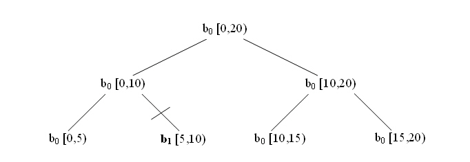

parallel_reduce Template Function¶
Summary¶
Computes reduction over a range.
Header¶
#include "tbb/parallel_reduce.h"
Syntax¶
template<typename Range, typename Value, typename Func, typename Reduction>
Value parallel_reduce( const Range& range, const Value& identity,
const Func& func, const Reduction& reduction,
[, partitioner[, task_group_context& group]] );
template<typename Range, typename Body>
void parallel_reduce( const Range& range, Body& body
[, partitioner[, task_group_context& group]] );
where the optional partitioner declares any of the partitioners as
shown in column 1 of the Partitioners table in the Partitioners section.
Description¶
The parallel_reduce template has two forms. The functional form is
designed to be easy to use in conjunction with lambda expressions. The imperative
form is designed to minimize copying of data.
The functional form parallel_reduce(range, identity, func, reduction) performs a parallel reduction by applying func to
subranges in range and reducing the results using binary operator
reduction. It returns the result of the reduction. Parameter func and
reduction can be lambda expressions. The table below summarizes the type
requirements on the types of identity, func, and reduction.
Requirements for Func and Reduction: Pseudo-Signature, Semantics |
|
|---|---|
|
|
|
|
|
|
The imperative form parallel_reduce(range,body)
performs parallel reduction of body over each value in range. Type
Range must model the Range concept. The body must model the
requirements shown in the table below.
Requirements for parallel_reduce Body: Pseudo-Signature, Semantics |
|
|---|---|
|
|
|
|
|
|
|
|
A parallel_reduce recursively splits the range into subranges to
the point such that is_divisible() is false for each subrange. A
parallel_reduce uses the splitting constructor to make one or more
copies of the body for each thread. It may copy a body while the body’s
operator() or method join runs concurrently. You are responsible for
ensuring the safety of such concurrency. In typical usage, the safety requires no
extra effort.
When worker threads are available, parallel_reduce invokes the
splitting constructor for the body. For each such split of the body, it invokes
method join in order to merge the results from the bodies. Define join to update
this to represent the accumulated result for this and rhs. The reduction operation
should be associative, but does not have to be commutative. For a noncommutative
operation op, “left.join(right)” should update
left to be the result of left op right.
A body is split only if the range is split, but the converse is not necessarily
so. The figure below diagrams a sample execution of
parallel_reduce. The root represents the original body
b0 being applied to the half-open interval [0,20). The range is
recursively split at each level into two subranges. The grain size for the example
is 5, which yields four leaf ranges. The slash marks (/) denote where copies
(b1 and b2) of the body were created by the body splitting
constructor. Bodies b0 and b1 each evaluate one leaf. Body
b2 evaluates leaf [10,15) and [15,20), in that order. On the way back up
the tree, parallel_reduce invokes b0.join(b1)
and b0.join(b2) to merge the results of the leaves.
Execution of parallel_reduce over blocked_range<int>(0,20,5)

The figure above shows only one possible execution. Other valid executions include
splitting b2 into b2 and b3, or doing no splitting
at all. With no splitting, b0 evaluates each leaf in left to right order,
with no calls to join. A given body always evaluates one or more
subranges in left to right order. For example, in the figure above, body
b2 is guaranteed to evaluate [10,15) before [15,20). You may rely on the
left to right property for a given instance of a body. However, you must neither
rely on a particular choice of body splitting nor on the subranges processed by a
given body object being consecutive. parallel_reduce makes the
choice of body splitting nondeterministically.
Example where Body b0 processes non-consecutive subranges.
The subranges evaluated by a given body are not consecutive if there is an
intervening join. The joined information represents processing of a
gap between evaluated subranges. The figure above shows such an example. The body
b0 performs the following sequence of operations:
b0( [0,5) )
b0
.join()( b1 ) where b1 has already processed [5,10)b0( [10,15) )
b0( [15,20) )
In other words, body b0 gathers information about all the leaf subranges
in left to right order, either by directly processing each leaf, or by a join
operation on a body that gathered information about one or more leaves in a similar
way. When no worker threads are available, parallel_reduce executes
sequentially from left to right in the same sense as for
parallel_for. Sequential execution never invokes the splitting
constructor or method join.
All overloads can be passed a task_group_context object so that the
algorithm’s tasks are executed in this group. By default the algorithm is executed
in a bound group of its own.
Complexity
If the range and body take O(1) space, and the range splits into nearly equal pieces, then the space complexity is O(P×log(N)), where N is the size of the range and P is the number of threads.
Example (Imperative Form)¶
The following code sums the values in an array.
#include "tbb/parallel_reduce.h"
#include "tbb/blocked_range.h"
using namespace tbb;
struct Sum {
float value;
Sum() : value(0) {}
Sum( Sum& s, split ) {value = 0;}
void operator()( const blocked_range<float*>& r ) {
float temp = value;
for( float* a=r.begin(); a!=r.end(); ++a ) {
temp += *a;
}
value = temp;
}
void join( Sum& rhs ) {value += rhs.value;}
};
float ParallelSum( float array[], size_t n ) {
Sum total;
parallel_reduce( blocked_range<float*>( array, array+n ),
total );
return total.value;
}
The example generalizes to reduction for any associative operation op as follows:
Replace occurrences of 0 with the identity element for op
Replace occurrences of += with op= or its logical equivalent.
Change the name
Sumto something more appropriate for op.
The operation may be noncommutative. For example, op could be matrix multiplication.
Example with Lambda Expressions¶
The following is analogous to the previous example, but written using lambda
expressions and the functional form of parallel_reduce.
#include "tbb/parallel_reduce.h"
#include "tbb/blocked_range.h"
using namespace tbb;
float ParallelSum( float array[], size_t n ) {
return parallel_reduce(
blocked_range<float*>( array, array+n ),
0.f,
[](const blocked_range<float*>& r, float init)->float {
for( float* a=r.begin(); a!=r.end(); ++a )
init += *a;
return init;
},
[]( float x, float y )->float {
return x+y;
}
);
}
STL generalized numeric operations and functions objects can be used to write the example more compactly as follows:
#include <numeric>
#include <functional>
#include "tbb/parallel_reduce.h"
#include "tbb/blocked_range.h"
using namespace tbb;
float ParallelSum( float array[], size_t n ) {
return parallel_reduce(
blocked_range<float*>( array, array+n ),
0.f,
[](const blocked_range<float*>& r, float value)->float {
return std::accumulate(r.begin(),r.end(),value);
},
std::plus<float>()
);
}